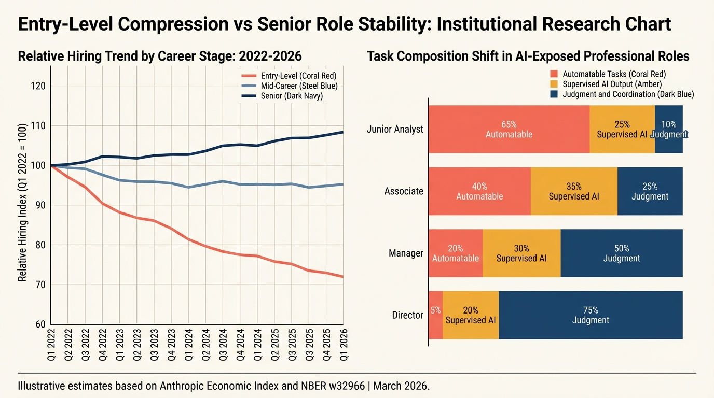
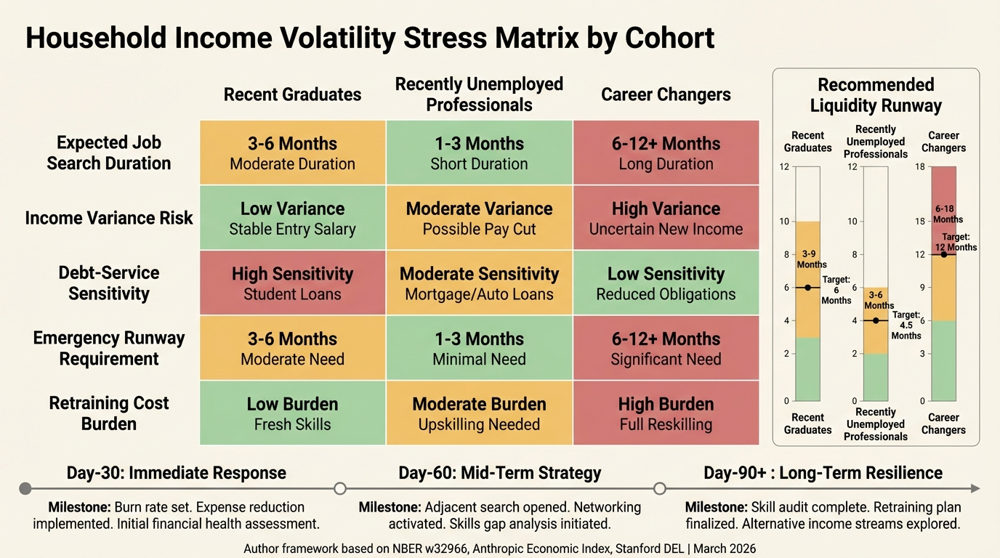
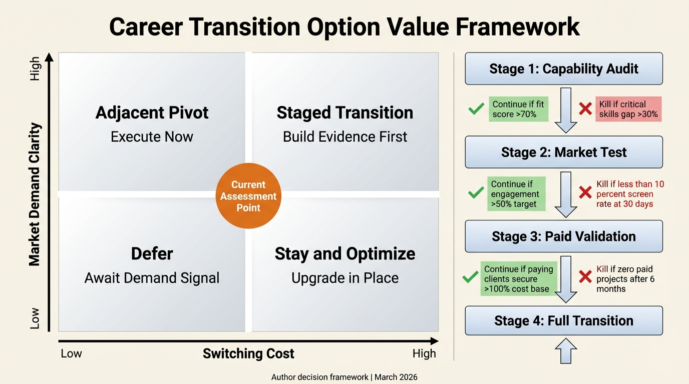

The End of the Safe Job Illusion: AI Labor Deflation in White-Collar Income
The white-collar contract is repricing in public view. Compensation growth is slowing, entry gates are tightening, and households that budgeted for linear career income are absorbing the shock first.
The first AI labor shock in professional work is not mass unemployment. It is wage pressure, slower hiring, role fragmentation, and unstable career ladders that destabilize household plans before layoffs dominate official statistics.
For two decades, educated white-collar workers carried a structural assumption: once you entered the professional track, your income path was noisy but directionally upward. That assumption is now repricing. The current AI regime is raising output expectations per employee, expanding the surface area for task automation, and reducing demand for entry-level labor in specific occupations. The effect is uneven, but measurable, concentrated, and moving faster than most career narratives have adjusted for.
The phrase "safe job" still appears in career advice columns. In this cycle, safety is less about job title and more about task composition, adaptation speed, and balance-sheet resilience. Workers performing highly codifiable cognitive workflows, including document drafting, data synthesis, routine legal review, and template-based financial modeling, face faster repricing than workers combining domain judgment, coordination, institutional accountability, and client trust in ways that are difficult to substitute at the task level.
Core thesis: AI is introducing labor deflation in exposed white-collar segments through three simultaneous channels: compensation compression, role fragmentation, and entry-level access decline.
The Data Baseline
Adoption velocity is already established. NBER Working Paper 32966 by Bick, Blandin, and Deming documents rapid workplace diffusion, with meaningful shares of weekly work hours already AI-assisted across surveyed employees. The diffusion speed outpaced prior general-purpose technology introductions at comparable stages. That does not automatically imply net job loss. It does imply that labor demand can restructure faster than legacy HR planning cycles, compensation bands, or career ladder assumptions.
Anthropic's Economic Index adds task-level granularity. The September 2025 report documented uneven enterprise and geographic adoption patterns alongside broadening practical use across industry categories. The January 2026 report sharpened the picture: usage concentrates in a limited set of recurrent tasks, and the dominant mode, augmentation versus automation, varies significantly by workflow design and channel architecture. The practical implication is that AI's labor impact is not uniform within a firm, let alone across an economy. It is surgical in some functions and nearly absent in others, which is why aggregate employment statistics can look stable while specific occupational segments reprice sharply.
Stanford Digital Economy Lab's "Canaries in the Coal Mine" work by Brynjolfsson, Chandar, and Chen provides the highest-frequency labor signal available. Using payroll-linked data at the occupation and establishment level, the authors identify relative employment pressure for young workers in highly exposed occupations, with effects concentrated in automation-heavy contexts and more muted where AI functions as augmentation. The geographic clustering of these effects suggests firm-level implementation choices, not just technology availability, are driving the labor outcome.
The honest aggregate read: adoption is rapid, task concentration is high in specific workflow classes, and early labor effects are real but uneven. The mechanism is clearer than the magnitude, which should inform how strongly any investor or worker makes directional career bets.

Compensation Compression: The First Channel
Labor deflation in white-collar sectors does not require nominal wage cuts across the board. It can emerge through slower salary growth, weaker bid competition in hiring, lower variable pay, and rising output quotas without proportional compensation increases. The economic mechanism is straightforward: employers treat AI tools as productivity multipliers, rebalance headcount math, and reallocate compensation budgets toward fewer high-leverage roles.
This creates asymmetric outcomes within the same job family. Top performers with strong domain context and genuine AI workflow fluency can earn more because they now command the productivity of what formerly required a team. Median workers face flatter trajectories as organizations redefine baseline output expectations. Compensation dispersion widens inside role categories. The median stagnates while the top decile accelerates. This is not a new phenomenon in technology transitions, but the speed of this cycle is compressing the adjustment window.
For household finance, the implication is structural. Most planning models assume smooth wage growth, stable bonus pools, and predictable merit cycles. When income growth becomes episodic and distributional, debt-service assumptions and retirement contribution schedules built on those models become unreliable. The household risk that matters is not just the probability of layoff. It is the probability that the income trajectory you planned around simply does not materialize.
Role Fragmentation: The Second Channel
Many professional jobs are being decomposed into narrower task bundles: drafting, synthesis, QA, client-facing interpretation, compliance review, escalation handling. AI systems can now absorb parts of this stack, allowing firms to redesign teams around fewer full-spectrum generalist roles and more specialized oversight functions. The job title persists. The underlying labor demand quietly shifts.
Fragmentation's most underappreciated effect is on career mobility. Workers can remain continuously employed yet lose breadth of responsibility, which directly reduces future promotion probability and bargaining power. A narrower functional scope today becomes a weaker negotiating position tomorrow when market alternatives are fewer. This is one of the primary mechanisms through which income risk rises even as unemployment stays moderate. The headline statistic looks fine; the career trajectory is deteriorating.
Fragmentation also increases contractor and project-based staffing in specific workflows. That expands firm flexibility while shifting income volatility to workers, irregular utilization, weaker benefit coverage, and the cognitive overhead of managing continuous work acquisition rather than a stable employment relationship. The productivity gains accrue to the balance sheet. The volatility lands in household budgets.
Entry-Level Compression: The Third Channel
Entry-level professional jobs historically functioned as training subsidies. Firms tolerated initial inefficiency in new hires because the investment paid out over tenure. AI changes that economics. If systems can absorb routine onboarding tasks, deliver structured best-practice scaffolding, and produce first-draft outputs at acceptable quality, firms can sustain the same aggregate output with fewer junior employees. The result is fewer openings, higher screening intensity, and delayed professional footholds for candidates who would previously have cleared entry thresholds.
The Stanford "Canaries" evidence is consistent with this pattern in highly exposed occupations. The key interpretive point is not that all graduates are displaced. It is that transition friction is rising in occupations where tasks are highly codifiable and substitution at the junior level is economically rational for employers. Entry-level law firm work, junior financial analysis from templates, entry-level content roles, and first-year consulting task assignments are among the workflow categories where the labor economics have shifted materially.
This changes the credential calculus. A degree provided a hiring signal and a training warrant. It still provides the signal; the training warrant is weaker when firms can scaffold training artificially. Graduate strategy therefore needs to shift from credential-first to capability-stack-first: demonstrated execution ability, AI workflow competence, and portfolio evidence of output quality, not only educational pedigree.

Recently Unemployed Professionals: Second-Round Risk
Recently displaced white-collar workers face a distinct and often underestimated problem: prior market salary anchors may not clear new demand conditions. In a labor-deflationary segment, job seekers can encounter longer search duration, title downgrades, or compensation resets even with strong prior performance records.
The financial risk is typically underestimated because severance and savings create a temporary buffer that masks the structural nature of the mismatch. Search duration beyond six months can trigger a reinforcing negative loop: skill signal weakens in screeners' eyes, negotiation leverage declines, and households deplete liquidity at precisely the moment when optionality is most valuable. The buffer that felt like protection becomes a countdown.
The correct mental model is to treat an involuntary unemployment event as a capital-allocation decision, not merely a career event. Runway extension, expense restructuring, and rapid skill-to-demand mapping should happen in parallel from week one, not sequentially after a confidence-rebuilding phase. Every week of sequential instead of parallel action has a measurable cost in remaining optionality.
Career Changers: Option Value vs. Switching Cost
Career change decisions in this regime should be evaluated with the same discipline as a staged investment with entry price, expected return, downside scenario, and explicit failure cutoff. The common mistake is binary framing: stay or switch. A more rigorous architecture stages the transition: adjacent skill transfer first, short-cycle credentialing where it converts to market access, project portfolio evidence, then full pivot when demand confirmation exists in the form of actual paid work or credible offers, not optimism about a market.
Switches toward AI-complement roles can generate strong returns, but only when the target role has a defensible task mix that resists the same automation pressure the candidate is fleeing, and a clear monetization path with demonstrated employer demand. Courses without market linkage create cost without option value. The right metric is not course completion rate. It is interview conversion rate and paid-work conversion rate within a predefined time window that the household can actually fund.
Career changers should model transition the way an investment committee models an illiquid position: base case with expected IRR, downside case with maximum drawdown, and a pre-committed exit criterion if conversion does not materialize within the budgeted runway. That discipline protects household solvency while maintaining the strategic upside of a well-timed pivot.
Household Wealth Planning Under Labor Income Volatility
Most household financial models still assume stable income trend as the base case, with market volatility as the primary risk variable. AI labor deflation introduces a second volatility dimension directly into the income line, and the two can be correlated. A bear market in risk assets and a deteriorating labor market for white-collar workers can arrive together, as they did in 2022 and as they are partially doing now in March 2026.
| Planning Area | Prior Assumption | AI Labor-Deflation Regime |
|---|---|---|
| Income growth | Steady annual increases | Flat periods punctuated by resets or jumps |
| Emergency runway | 3-6 months often sufficient | 6-12 months increasingly prudent in exposed roles |
| Career risk | Primarily cyclical/macro | Macro plus task-level substitution risk |
| Debt strategy | Optimize for lower monthly cost | Optimize for flexibility under income uncertainty |
| Human capital | Credentials durable for years | Continuous renewal required; depreciation accelerates |
| Compensation dispersion | Narrow within role families | Widening; median may stagnate while top decile rises |
The key planning shift is from return maximization to fragility minimization. Workers with exposed income streams should prioritize liquidity and optionality over lifestyle expansion, not as defensive psychology, but as correct risk pricing for a changed labor regime. The household that does not acknowledge the new volatility structure is not being optimistic; it is being inaccurate about its own risk profile.
Emergency fund sizing of 6-12 months in AI-exposed roles is not conservative overreach. It is calibrated to the actual search duration distribution and the switching cost profile of occupations facing structural repricing.

Action Frameworks by Cohort
Recent Graduates (Next 12 Months)
- Build a public work portfolio demonstrating AI-assisted execution quality. Do not submit only a certificate list.
- Target roles where accountability, stakeholder coordination, and contextual judgment are non-separable from execution.
- Use shorter application cycles with measurable conversion metrics.
- Negotiate first jobs with emphasis on breadth of exposure and client or stakeholder interaction.
Recently Unemployed Professionals
- Set a hard runway governance plan in week one: monthly burn rate, minimum liquidity floor, decision gates at 30, 60, and 90 days.
- Pursue adjacent re-entry paths first to reduce search half-life and restore income faster.
- Repackage prior experience around quantified outcomes and system ownership, not tool-level task histories.
- Treat the first 30 days as intelligence gathering on postings, compensation clearing ranges, and screening fit.
Career Changers
- Choose transition targets with demonstrated demand signal, active postings, compensation data, and practitioner feedback.
- Stage the switch with part-time paid revenue tests before full-income replacement timelines.
- Define kill criteria explicitly before beginning and document them in advance.

What Is Known, Inferred, and Uncertain
| Category | Content |
|---|---|
| Known | Workplace AI adoption is rapid and accelerating; task concentration is high in specific workflow categories; early labor-market effects are uneven by cohort and occupation. |
| Inferred | Continued diffusion at current speed will widen compensation dispersion and reduce entry-level demand in automatable white-collar segments; search duration will extend for affected cohorts. |
| Uncertain | Long-run net employment effects by sector; pace of institutional adaptation; degree and timing of policy response to early-career dislocation; whether new role categories form fast enough to absorb displaced workers. |
The uncertain column is where the loud debates live. The known and inferred columns are where household and portfolio decisions should be anchored.
Practical Bottom Line
The safe-job illusion ended when task-level automation began repricing white-collar labor faster than career narratives could adjust. The correct response is neither panic nor denial. Both are cognitively expensive and financially unproductive. The correct response is disciplined structural adaptation: protect runway, upgrade the capability stack continuously, and select roles where AI amplifies judgment rather than substitutes for routine output.
Workers who build adaptive resilience now are not being fearful. They are pricing risk accurately, which is the same thing professionals in every other domain do when they work well.
Source List
Bick, Blandin, Deming. The Rapid Adoption of Generative AI (NBER Working Paper 32966, September 2024; revised February 2025).
Brynjolfsson, Chandar, Chen. Canaries in the Coal Mine? Six Facts about the Recent Employment Effects of Artificial Intelligence (Stanford Digital Economy Lab, 2025/2026).
Brynjolfsson, Li, Raymond. Generative AI at Work (NBER Working Paper 31161, revised November 2023).
Anthropic. Economic Index Report: Uneven Geographic and Enterprise AI Adoption (September 15, 2025).
Anthropic. Economic Index Report: Economic Primitives (January 2026).
NBER Digest. Workplace Adoption of Generative AI (December 2024).